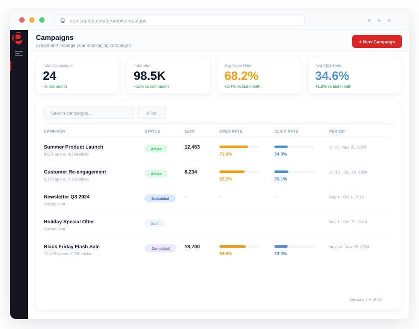

A transactional message that doesn't arrive isn't just a missed notification.
A fraud alert that goes undelivered. An OTP that never reaches the customer. An order confirmation that arrives three hours late. Transactional messages carry real consequence when they fail. Pronto ensures they don't, with event-driven automation, cross-channel failover, and per-message delivery verification built in from the start.

Transactional messages aren't campaigns. They're commitments, triggered by a real event, expected by the recipient, and consequential when they fail.
OTP & Fraud Alerts
Authentication codes and fraud notifications that must arrive within seconds, not minutes
Order & Delivery Notifications
Confirmation, dispatch, out-for-delivery, and delivered: expected by every customer on every order
Appointment Reminders
Patient notifications that reduce DNA rates, reliably delivered across SMS, WhatsApp, and Email
Billing & Outage Alerts
Payment notifications and outage updates triggered by meter events or network management systems
Booking Confirmations
Reservation confirmations, itinerary updates, and check-in notifications for travel operators
Why enterprise transactional messaging fails, and why it matters when it does
Silent delivery failure: messages appear sent but never arrive
The most dangerous transactional messaging failure isn't a visible error. It's a message that shows as sent in your platform, is logged as dispatched in your CRM, but never reaches the recipient. No alert fires. No retry triggers. The customer never gets their fraud warning or OTP. Nobody on your team knows until the complaint comes in, or the regulator asks.
CRM events trigger manual processes instead of automatic sends
A payment clears, an order ships, an appointment is booked, and somewhere a person has to build a campaign, export a contact list, and press send. At low volumes this is inconvenient. At scale it's unsustainable, error-prone, and slow. The gap between when the event happens and when the customer hears about it is filled with manual effort that adds latency and risk to every transactional touchpoint.
A single carrier outage stops all transactional communications
When your transactional messaging runs through a single SMS provider, that provider's availability is your availability. A 30-minute carrier outage during peak hours means thousands of order confirmations, OTP codes, and fraud alerts simply don't arrive. With no automatic failover to a secondary carrier or alternative channel, there's no safety net and no way to know which recipients were affected until the damage is done.
No proof of delivery when regulators or customers ask
For regulated industries, a transactional message isn't just a customer communication; it's a compliance artefact. FCA rules on fraud alerts, GDPR requirements on consent communications, and ORR obligations on passenger notifications all carry an implicit expectation that delivery can be proven. When the evidence trail lives in a provider dashboard with 30-day retention and no audit export, that proof simply isn't there.
How Kaptea Pronto makes transactional messaging reliable at enterprise scale
"Every order confirmation, dispatch notification, and delivery update requires someone to manually set up a send. We have thousands of these a day. The marketing team is running them between campaign work. Messages go out late, we miss events entirely, and the process just doesn't scale."
Event-driven orchestration: triggered by your systems, not your team
Pronto integrates with Salesforce, Microsoft Dynamics 365, and specialist platforms via REST API and webhook. An event in your source system (order placed, payment confirmed, appointment booked, account status changed) fires directly to Pronto, which selects the approved template, resolves the recipient's preferred channel, and dispatches the message. No manual campaign. No human in the loop. Configuration is done once; every subsequent event is handled automatically, at any volume, at any hour.
- REST API and webhook integration with CRM and operational platforms
- Event-to-send in seconds, with no manual intervention per message
- Template selection and personalisation handled automatically per event
- Scales with event volume, with no additional team resource required
"Our SMS provider had an outage last quarter for about 40 minutes. During that window, thousands of OTP codes and fraud alerts simply didn't get delivered. Some customers couldn't complete transactions. Others had fraudulent activity we couldn't alert them to fast enough. We had no fallback at all."
Cross-channel failover with retry logic, no silent failure
Pronto monitors carrier delivery rates in real time. If a primary carrier falls below delivery threshold, the platform automatically reroutes to a secondary carrier within seconds. At the message level, failed delivery attempts are retried up to 5 times with exponential backoff. If the primary channel is exhausted, the message automatically cascades to the next configured channel (SMS to WhatsApp, WhatsApp to Email, Email to RCS) until delivery is confirmed. Every attempt is logged. A message.failed event fires to your monitoring systems if all retries are exhausted, so your team is notified without manual monitoring.
- Real-time carrier monitoring with automatic rerouting on degradation
- Up to 5 retry attempts with exponential backoff per failed message
- Cross-channel cascade: SMS → WhatsApp → Email → RCS automatically
- Event streaming to Slack, PagerDuty, Datadog on message failure
"When our compliance team asked us to prove we sent a specific fraud alert to a specific customer on a specific date, it took three days to piece together an incomplete picture from our SMS provider's logs and our CRM. We need one place where the complete evidence lives."
Per-message delivery verification with exportable audit trail
Pronto tracks the status of every message at the recipient level in real time (Queued, Sent, Delivered, Bounced, Failed) using provider callbacks from SMS carriers, WhatsApp, and SendGrid. Delivery status is available in the platform dashboard and via event streaming to your CRM or monitoring tools the moment it changes. For regulated industries, audit logs are exportable as CSV with per-message sender identity, timestamp, channel, template version, and delivery status, providing complete compliance evidence without relying on provider dashboards with short retention windows.
- Per-recipient status tracking: Queued, Sent, Delivered, Bounced, Failed
- Real-time delivery callbacks from SMS carriers, WhatsApp, and SendGrid
- Event streaming to CRM or monitoring tools on every status change
- Exportable audit log: full evidence trail for compliance submissions
"We have a central team managing transactional templates but local teams keep creating their own versions. Different wording, different sender names, sometimes wrong regulatory language. We can't have a fraud alert that says something different depending on which team sent it."
Centralised governance: consistent, compliant templates across every send
Pronto's template management ensures that every transactional message, regardless of which team, system, or automation triggered it, uses approved content. Templates are created centrally through a draft-review-approve workflow. Compliance-critical fields are locked; personalisation fields are open within defined limits. Once published, templates are available to the divisions and automations configured to use them. No local override, no rogue version: every fraud alert, OTP, and order confirmation sends exactly what compliance approved.
- Central template approval workflow: draft, review, approve, publish
- Locked fields for regulatory language that can't be changed locally or by automation
- Full template version history with approver identity and timestamp
- Priority queue separation: transactional sends never delayed by marketing batch
Seconds
From CRM or system event to first outbound transactional notification
5
Automated retry attempts with exponential backoff before failure escalation
Zero
Manual campaign steps for CRM-triggered transactional sends once configured
100%
Per-message audit trail coverage: every send logged with delivery evidence
"At the volumes we operate, every parcel needs a notification and every notification needs to arrive. We can't have a carrier outage silencing millions of delivery updates or a manual process that can't keep up with daily dispatch volumes. Pronto gave us the automation to trigger every notification from our systems, the failover to ensure they get through, and the audit trail to prove delivery when it matters."
Head of Customer Experience
National postal service operator, Public Sector & Logistics
Millions
Transactional notifications processed per month across all channels
Zero
Zero manual campaign steps: every send triggered automatically from dispatch systems
100%
Audit trail coverage: per-message delivery evidence for every notification
Days
From contract to live, fully integrated Pronto deployment at national scale
Transactional messaging that actually gets there
Industries where transactional messaging carries real consequence
In every industry below, a missed or delayed transactional message has a direct impact on customers, on compliance, or on revenue. The infrastructure has to match the stakes.
Financial Services
OTP delivery, fraud alerts, and account notifications where a missed message creates customer exposure, regulatory risk, and potential liability.
See the solution →Retail & Ecommerce
Order confirmations, dispatch alerts, and delivery notifications at scale, triggering automatically from fulfilment systems with full failover.
See the solution →Healthcare
Appointment reminders, patient notifications, and care pathway communications, reliably delivered with compliance-ready audit trails.
See the solution →Utilities & Energy
Billing notifications, meter alerts, and outage updates triggered by network management and billing systems, automatically, at scale.
See the solution →Travel & Transport
Booking confirmations, itinerary updates, and check-in notifications, CRM-triggered and delivered with cross-channel failover.
See the solution →Public Sector
Citizen notifications, service alerts, and compliance communications, with the audit trail that regulated public organisations require.
See the solution →Infrastructure that earns trust at the message level
Every transactional message is a promise. The platform underneath it needs to be as reliable as the commitment it carries.
ISO 27001:2022
Independently certified information security management, audited annually.
99.5%+ Uptime SLA
Carrier-grade infrastructure with multi-zone redundancy and automatic failover.
Dedicated Instance
Your own isolated environment, with no shared infrastructure and no data co-mingling.
EU & US Data Residency
Choose where your data lives (UK, EU, or US) for compliance and data sovereignty.
Frequently asked questions
Every transactional message. Delivered. Verified. Evidenced.
See how Kaptea Pronto gives enterprises the automation, failover, and audit infrastructure to make transactional messaging reliable at any scale.
Book a Demo